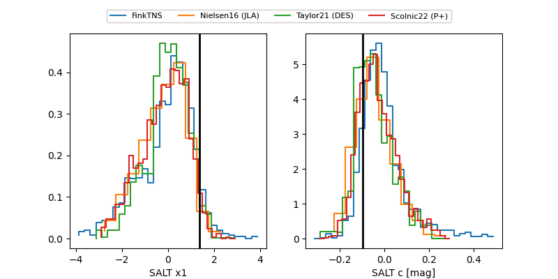

FINK: ZTF25ablaysd
Lasair: ZTF25ablaysd
ALeRCE: ZTF25ablaysd
TNS: 2025wje
YSE: 2025wje
ZTF25ablaysd (ztf,fink)
2025wje (tns,yse)
equatorial (ra, dec) = (346.6689,+28.51336)
galactic (l, b) = (96.6228,-28.95200)

last ztfg=20.01, ztfr=20.18
4 ztfg, 2 ztfr detections